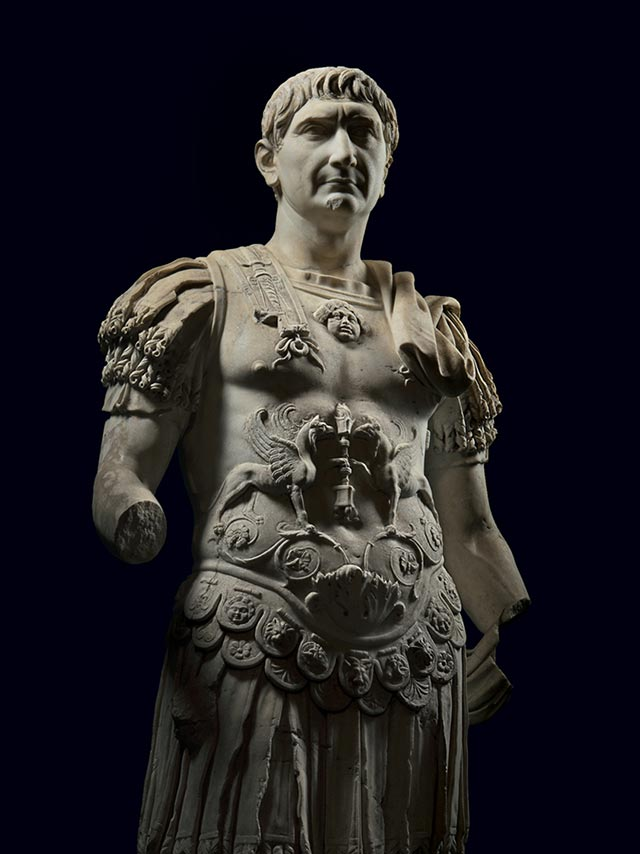

Trajan, or Marcus Ulpius Traianus, was Roman emperor from 98 to 117 CE. Known as a benevolent ruler, his reign was noted for public projects which benefitted the populace such as improving the dilapidated road system, constructing aqueducts, building public baths and extending the port of Ostia. Trajan was also a highly successful general and won three major conflicts against the Dacians and in the east, resulting in the Roman Empire reaching its greatest size up to that date.
When Nerva died in January 98 CE, Trajan did not immediately return to Rome. Instead, he inspected the Rhine and Danube frontiers to not only safeguard against the Dacians but also to test the allegiance of many of the legions still loyal to Domitian. Finally, in the summer of 99 CE, he made his entry into Rome on foot where he mingled with both the citizenry and senators. Pliny the Younger (61-112 CE) - a lawyer, author, and governor of Bithynia - often corresponded with Emperor Trajan on a variety of topics. After Nerva's death and Trajan's ascension, Pliny wrote one of his many letters to the new emperor, ”May you then, and would through your means, enjoy every prosperity worthy of your reign: to which let me add my wishes, most excellent Emperor, upon a private as well as public account, that your health and spirits may be preserved firm and unbroken.”
Trajan is born in Italica (Seville) in the Roman province of Hispania.
Trajan serves as quaestor at Gortyn, Crete.
Emperor Nerva appoints Trajan as governor of Upper Germany.
Adoption of Trajan by Roman Emperor Nerva.
Reign of Roman Emperor Trajan.
Trajan conquers Dacia.
Trajan again defeats Dacians.
The Baths of Trajan in Rome are completed.
Forum of Trajan dedicated.
Trajan's column is constructed in Rome which commemorates the emperor's campaigns in Dacia.
Roman emperor Trajan annexes Armenia and declares war on Parthia.
Invasion and annexation of the Fertile Crescent region by Rome under Trajan.